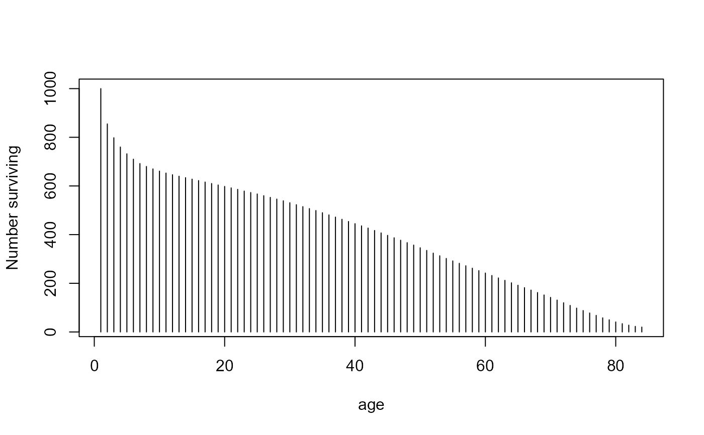
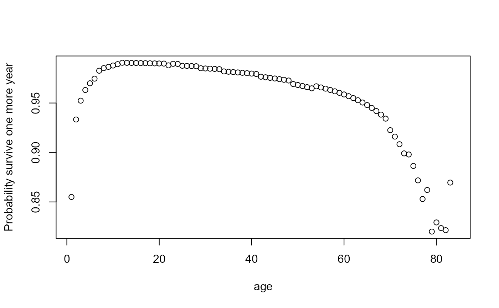
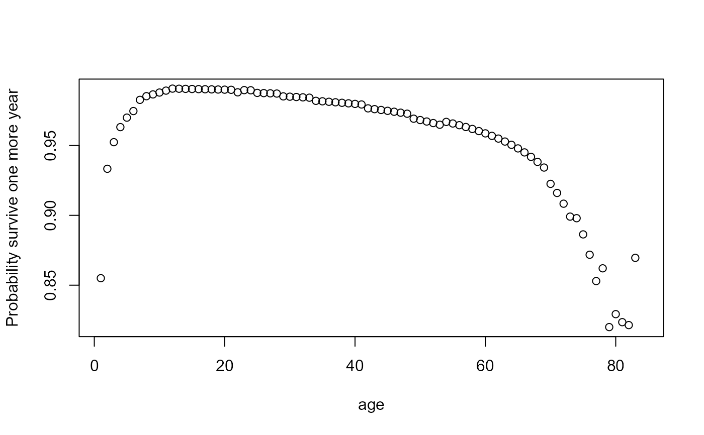

Halley's Life Table
HalleyLifeTable.RdIn 1693 the famous English astronomer Edmond Halley studied the birth and death records of the city of Breslau, which had been transmitted to the Royal Society by Caspar Neumann. He produced a life table showing the number of people surviving to any age from a cohort born the same year. He also used his table to compute the price of life annuities.
Usage
data("HalleyLifeTable")Format
A data frame with 84 observations on the following 4 variables.
agea numeric vector
deathsnumber of deaths, \(D_k\), among people of age k, a numeric vector
numbersize of the population, \(P_k\) surviving until this age, a numeric vector
ratiothe ratio \(P_{k+1}/P_k\), the conditional probability of surviving until age k + 1 given that one had already reached age k, a numeric vector
Details
Halley's table contained only age and number.
For people aged over 84 years, Halley just noted that their total number was 107.
This value is not included in the data set.
The data from Breslau had a mean of 1,238 births per year: this is the value that Halley took for the size, \(P_0\) of the population cohort at age 0. From the data, he could compute the annual mean \(D_k\) of the number of deaths among people aged \(k\) for all \(k >= 0\). From this, he calculated the number \(P_{k+1}\) surviving one more year, $$P_{k+1} = P_k - D_k$$
This method had the great advantage of not requiring a general census but only knowledge of the number of births and deaths and of the age at which people died during a few years.
Source
N. Bacaer (2011), "Halley's life table (1693)", Ch 2, pp 5-10. In A Short History of Mathematical Population Dynamics, Springer-Verlag London, DOI 10.1007/978-0-85729-115-8_2. Data taken from Table 1.
References
Halley, E. (1693). An estimate of the degrees of the mortality of mankind, drawn from curious tables of the births and funerals at the city of Breslau; with an attempt to ascertain the price of annuities upon lives. Philosophical Transactions of the Royal Society, London, 17, 596-610.
The text of Halley's paper was found at http://www.pierre-marteau.com/editions/1693-mortality.html
Examples
data(HalleyLifeTable)
# what was the estimated population of Breslau?
sum(HalleyLifeTable$number)
#> [1] 33894
# plot survival vs. age
plot(number ~ age, data=HalleyLifeTable, type="h", ylab="Number surviving")

# population pyramid is transpose of this
plot(age ~ number, data=HalleyLifeTable, type="l", xlab="Number surviving")
with(HalleyLifeTable, segments(0, age, number, age, lwd=2))
 # conditional probability of survival, one more year
plot(ratio ~ age, data=HalleyLifeTable, ylab="Probability survive one more year")

# conditional probability of survival, one more year
plot(ratio ~ age, data=HalleyLifeTable, ylab="Probability survive one more year")
